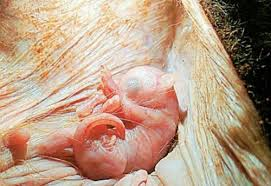
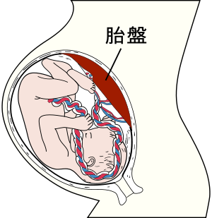

哺乳類的繁殖
哺乳類的卵在體內受精。胚胎在子宮發育，並受美欽的保護和供給養分。出生後，幼獸靠吸允母奶長大。
動物身上有袋子的，稱為有袋類。僅產於澳洲和南美。

小袋鼠生下來時個體很小，顯得無助。出生後爬到母親的帶中尋獲一個奶頭，牠在袋中吃了好幾個月的奶，直到能獨立生活才離開。
有胎盤的哺乳類分布全世界，他們是最成功的陸妻脊椎動物。

胚胎在母體的子宮裡生活了好幾個月，子宮裡的胎盤是母體營養運輸到子體的通道。